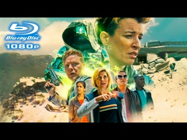
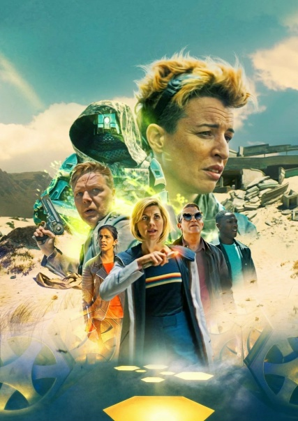

 | Весь 11-й сезон (10 серий) |
The Ghost Monument
Дата выхода: 14 октября 2018
Формат: 49-минутный эпизод
| Варианты озвучек: | * Разные: смотрите по инструкции |
|---|---|
| Скачивание и просмотр: |
Смогут ли Доктор и ее новые друзья выжить во враждебной инопланетной среде и раскрыть тайну планеты Пустошь?
